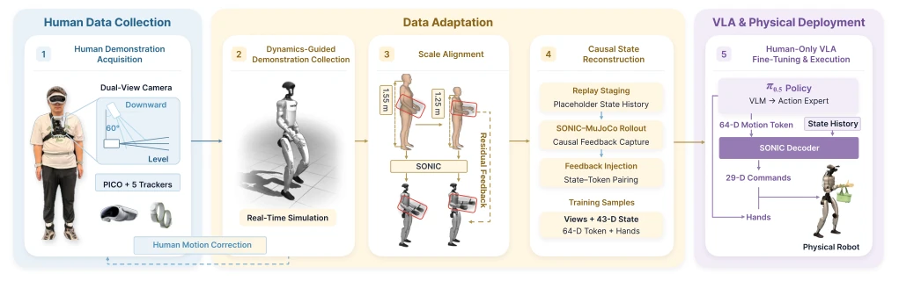
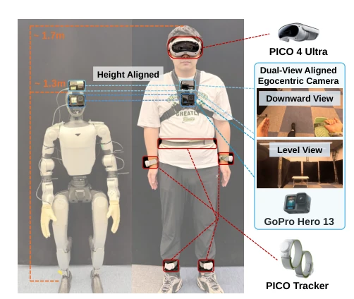
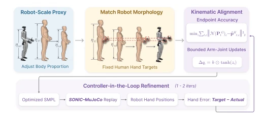
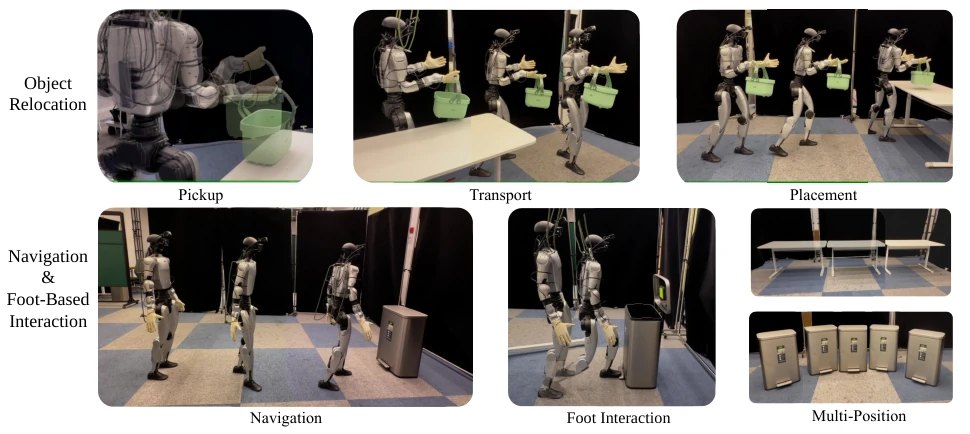
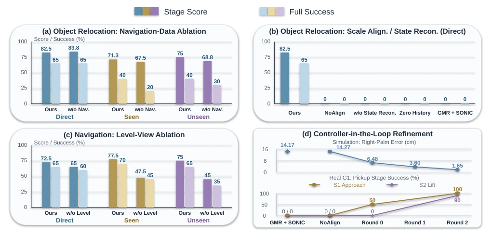

这篇 EgoAlign 试图用人类视频“低成本”获取人形机器人数据，确实有点东西。它不碰真机，靠仿真器 MuJoCo 和控制器 SONIC 把人类动作“翻译”成机器人能懂的 token，最后真机 zero-shot 跑通了 10 米搬运和脚部交互，这效率比传统遥操作高 5 倍不止。但别高兴太早，它强依赖 SONIC 这个特定控制器，换个控制器可能就得重头再来。而且仿真到真实的鸿沟虽然缩小了，但 1.65cm 的手部误差在精密操作里还是有点尴尬。总的来说，这是把“人类经验”强行塞进“机器人身体”的一次成功移植，但还没到“通用”的地步，属于特定场景下的聪明取巧，适合快速验证而非工业落地，未来还需解决更复杂的物理接触问题。
This EgoAlign work attempts to acquire humanoid robot data from human videos at a "low cost", which is indeed noteworthy. It avoids using real hardware, relying instead on the MuJoCo simulator and SONIC controller to "translate" human actions into tokens understandable by robots, ultimately achieving zero-shot execution on real hardware for 10-meter carrying and foot interaction, with efficiency exceeding traditional teleoperation by more than 5 times. However, one should not celebrate too soon; it heavily relies on the specific SONIC controller, and switching controllers might require starting from scratch. Furthermore, although the sim-to-real gap is narrowed, a 1.65cm hand error remains somewhat problematic in precision manipulation. In summary, this represents a successful transplantation of "human experience" forcibly integrated into "robotic embodiment", yet it has not reached "general-purpose" status. It constitutes a clever workaround for specific scenarios, suitable for rapid verification rather than industrial deployment, requiring future resolution of more complex physical contact issues.
Expanding VLA learning requires massive datasets, yet physical robot teleoperation is costly and prone to damage [1], [2]. Although egocentric human demonstrations provide navigation and interaction experience [3], [4], directly applying them to humanoid robot training presents significant challenges. The substantial differences in body scale and controller response between humans and robots lead to hand trajectory deviations [6]. Furthermore, human demonstrations lack robot state history, which is critical for long-distance loco-manipulation since VLA models require state history to decode actions. Existing works such as HuMI [9] and BifrostUMI [10] attempt robot-free demonstrations but often lack continuous full-body control interfaces or fail to guarantee physical interaction accuracy. EgoAlign aims to bridge this gap by transforming human demonstrations into supervised signals compatible with universal controllers, addressing the conflict between data scarcity and bodily differences to enable zero-shot physical deployment.
The overall workflow is divided into data collection, motion adaptation, state reconstruction, and training. 1. Data Collection: Human actions are recorded using PICO headsets and dual-view cameras (pitch/horizontal), matching the robot camera height [2]. 2. Motion Adaptation: Includes dynamics-guided collection (real-time simulation feedback guides demonstrators to amplify suppressed actions) and Scale Alignment. Scale Alignment first performs kinematic alignment, followed by iterative optimization via Controller-in-the-loop to correct residual errors in simulation [3]. 3. State Reconstruction: Utilizes Causal Replay to replay adapted actions within MuJoCo, generating corresponding robot body states (43-D) and action tokens (64-D), addressing the lack of state history in human data [1]. This specifically involves three stages: Replay Staging, SONIC-MuJoCo Rollout, and Feedback Injection, ensuring causal correspondence between states and actions. 4. Training and Deployment: Fine-tuning is performed on human data using the π0.5 architecture; during deployment, SONIC decodes tokens into joint commands. The core innovation involves introducing simulation feedback into the collection phase and reconstructing causal state pairs, ensuring consistency between training data and inference state distributions, thereby supporting long-distance loco-manipulation tasks.

Fig. 1. EgoAlign pipeline. (1) A wearable setup captures synchronized dual-view images and human motion. (2) Real-time SONIC–MuJoCo feedback guides demonstrators to adjust their motions. (3) Scale alignment adapts upper-body motion to human-reference hand targets through optimization and replay. (4) State reconstruction pairs pre-action robot states and same-tick motion tokens. (5) Human-only task training produces a π0.5 policy for zero- shot robot deployment, predicting 64-D motion tokens and hand commands from live observations; SONIC decodes tokens with state history into body commands. Dashed arrows indicate collection-time and offline feedback.

Fig. 2. Human collection and robot hardware with matched camera heights. The downward view captures near-field interaction, while the level view provides distant navigation cues.

Fig. 3. Scale alignment. Constructing a robot-scale SMPL proxy (left), matching fixed human hand targets (middle), and optimizing bounded arm- joint updates (right). The bottom loop uses SONIC–MuJoCo replay residuals for iterative refinement.
Evaluated on the Unitree G1, tasks include object carrying, navigation, and foot interaction. Baselines compared variants such as without navigation data, without state reconstruction, and without alignment. Metrics include stage scores and full success rates. Main results: The full method achieved a 65% success rate in direct carrying and 40% in multi-position scenarios; physical grasp success rate improved from 0% to 90% [6]. Ablation studies indicate that navigation data is crucial for multi-position placement, and the horizontal view is indispensable for long-distance navigation. The absence of state reconstruction leads to complete failure. Simulation hand error decreased from 14.27cm to 1.65cm. Compared to teleoperation, human data collection efficiency increased by 5.2 times. This demonstrates the feasibility of training without robot data, significantly improves physical interaction success rates through iterative optimization, and validates the effectiveness of sim-to-real transfer.

Fig. 4. Physical-G1 tasks and endpoint protocols for object relocation and for navigation and foot-based interaction. Object relocation comprises pickup, transport, and placement. Navigation and foot interaction form a complete behavior but are evaluated independently to separate navigation and foot-operation performance.

Fig. 6. Ablations of (a) navigation data, (b) alignment/state reconstruction, and (c) level view. (d) Refinement: simulated right-palm error (macro mean and 95% bootstrap CI) and physical S1/S2 success (20 Direct trials each for NoAlign and Rounds 0/2). GMR–SONIC fails at S1. Round 1 has simulation results only.